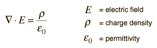

As with his math contributions, his science ones are both plenty in quantity and quality. He managed to cover most if not all of physics and mathematics at the time; perturbation of the planets, heat, and even sound. Nothing was out of the question for Poisson. Except of course actually doing or diagraming any of these. Most of his experiments were purely theoretical due to his lack of dexterity. He didn’t care though as the type of problem he enjoyed the most were those that had been previously worked on by others that lacked a full conclusion or could generally be improved upon (and didn’t need an actual experiment to do).
Poisson’s equation was his major contribution to physics. The equation, pictured below was one approach to calculate electric potentials.
Its main use was to describe the potential energy feild of any given elctrical charge.